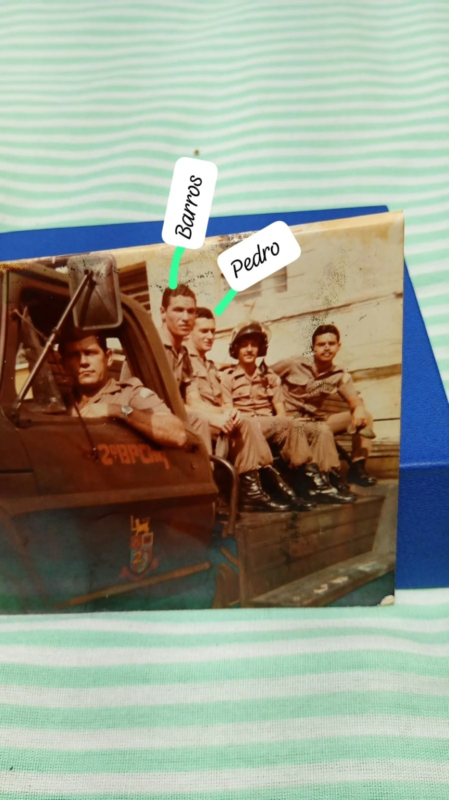
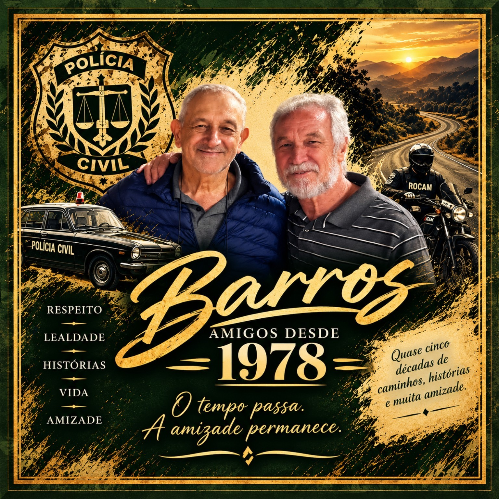

Desde
1978
Feliz aniversário, tio Barros
O tempo passa.
A amizade permanece.
Quando tudo começou
Dois jovens, uma época de trabalho e o início de uma amizade que seguiria muito além daqueles anos.

Naquela época, talvez não imaginássemos quantas histórias ainda viveríamos.
A vida aconteceu. A amizade continuou.
Vieram os casamentos, os filhos, as famílias cresceram e tantas lembranças foram sendo construídas. O tempo mudou muita coisa, mas não apagou o valor dessa amizade.

Duas épocas. Uma amizade. Uma vida inteira de histórias.
Meu amigo Barros,
Quem diria que aquele encontro, em 1978, daria início a uma amizade que atravessaria tantas fases da vida?
Naquela época, éramos jovens e nem imaginávamos quantas histórias ainda viveríamos. O tempo passou, vieram os casamentos, os filhos, as famílias cresceram e a vida nos levou por tantas experiências. E, em meio a tudo isso, nossa amizade continuou.
Você esteve presente em momentos importantes da minha história, assim como eu tive a alegria de participar da sua. São lembranças que guardamos, histórias que contamos, risadas que ainda provocam sorrisos e pequenos gestos que o tempo não apaga.
Hoje, olhando para trás, percebo que nossa amizade é muito mais do que os anos que passaram. Ela faz parte da nossa história, da história das nossas famílias e de tudo aquilo que construímos ao longo da vida.
Neste aniversário, quero que você saiba o quanto sua amizade é importante para mim. Que a vida ainda nos permita compartilhar muitos momentos, recordar nossas histórias e criar novas lembranças.
Feliz aniversário, meu amigo!
O tempo passa, a vida muda, as famílias crescem… mas algumas amizades se tornam parte de quem somos. E a nossa é assim: começou em 1978 e continua até hoje.
Pedro
Pequenos capítulos, uma grande história
Há lembranças que parecem pequenas, mas carregam o carinho de uma vida inteira.
O casamento e o Corcel
Barros queria levar Pedro à igreja no casamento, no interior — mas Pedro já tinha contratado um táxi. Um plano bem-intencionado que virou história para contar.
As famílias cresceram
Vieram os casamentos, os filhos e novos laços. Pedro esteve no casamento de Barros e Meire, em Arujá; a lembrança da viagem a Paraty também ficou na história da família.
Uma camisa que ficou
Um presente de tantos anos atrás que Pedro guarda até hoje — um pequeno objeto que acabou se tornando lembrança de uma amizade enorme.
E há muitas outras histórias que só dois amigos de longa data conseguem contar.
Desde 1978
Que esta música seja mais uma lembrança para guardar e ouvir sempre que quiser voltar a essa história.
▶ Ouvir a nossa cançãoPara guardar para sempre
A vida mudou, as famílias cresceram, as histórias se multiplicaram…
mas a amizade permaneceu.
Feliz aniversário, tio Barros.
Com carinho, Pedro